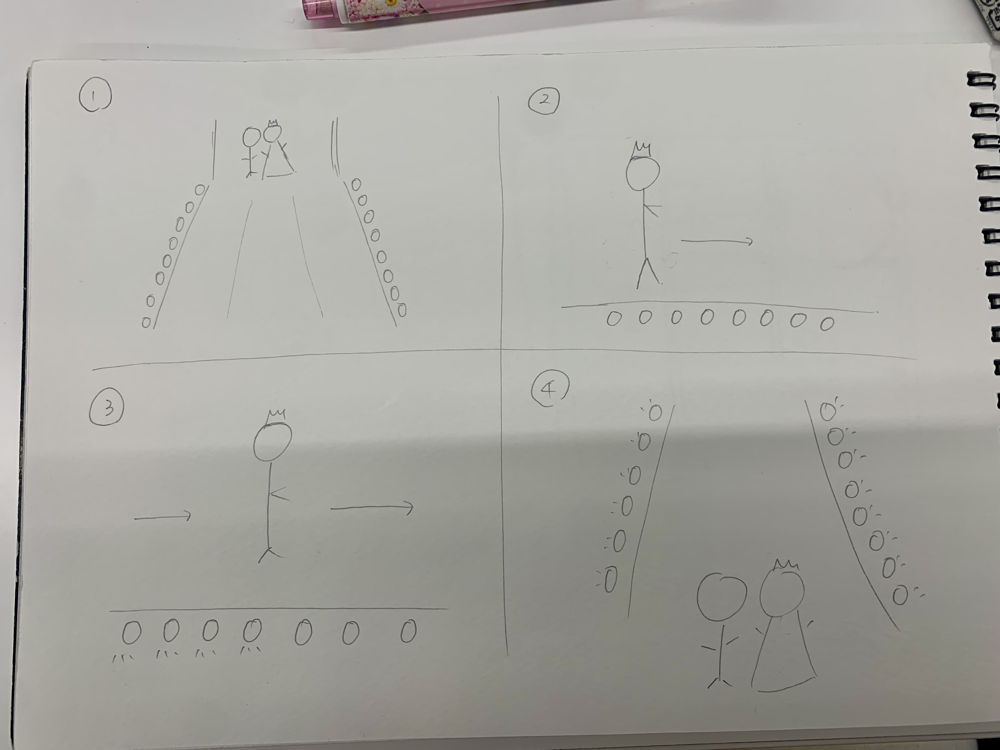

第二回
IoTを使った新しいサービス
班の中では、以下があがった。
①光ることで目につきやすくなるもの
②光を利用して美しいものを表現する
③遠隔操作ができるという特徴を生かしてより便利にする
というサービスの案が多くみられた。

光のバージンロード
私は、光のバージンロードと称して、ある道にライトを設置し、人が歩くと、歩いたところから少しずつ光っていくというサービスを考えた。
結婚式のチャペルで、新婦とお父様が歩かれるバージンロードを通ったところから徐々に、ライトアップしていくという幻想的な演出ができたら
素敵だなと思った。
結婚式だけに限らず、ある一部のスペースや道のりでこのようなシステムを取り入れるのも素敵だなと思う。
幻想的で美しい空間が普段の日常の中にできるたらその道を通ることで楽しさややすらぎを感じられるだろう。
目新しく、心踊る美しいサービスになってほしい。